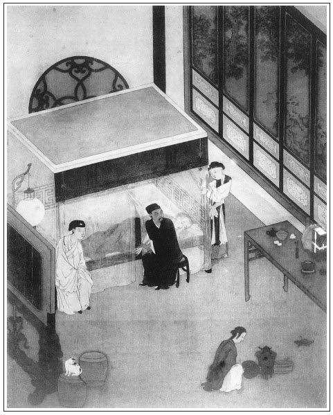

張回此回俱是下文引子。蓋伯爵戲金釧，明言遺簪墜珥，俱是相思隔花金串，行當入他人之手，是瓶兒未死，已先為金梅散去一影。然瓶兒一死，亦未嘗不有「隔花人遠天涯近」意。是此一回既影瓶兒死，復遙影蓮摧梅謝。
若任醫官，又為官哥作襯。見官哥不死，瓶兒尚可依。官哥死而瓶兒必死，子虛之靈不爽矣。
寫王姑子處修經，一繳玉皇廟，一起永福寺，一襯西門、月娘、瓶兒之愚也。
花園中一令，明說西門豪華不久，如世所云風花雪月者也。而諸笑談，又明說西門之得以肆其惡者，以有錢耳，總為財字一哭也。
寫敬濟、金蓮一驚，蓋為二人留地步也。夫不驚走，勢必常尋閒空，而心膽一放，牆壁難瞞，敬濟不能居於西門家矣。故用一驚頓住，留至西門一死，即接寫售色東床，又不費手，又有地步也。且因此可悟私琴童一回之文矣。欲為金蓮私婿不露馬腳於西門生時，必先寫私僕露馬腳於金蓮一來時，見金蓮懲此一辱，便不敢十分放膽，必俟西門死，月娘燒香去，方敗露盡情也。故寫琴童特為敬濟地耳。蓋當落想時。不寫敬濟、金蓮得手於西門在日，不足以形其奸。乃寫其得手，而雪娥、嬌兒在側虎視，何以不敗露？一敗露，而敬濟能不作琴童之續乎？故用先寫一琴童，以厭足嬌兒、雪娥之心，以暗驚金蓮之膽；又寫一理星，以迷西門之魄；又寫一蕙蓮，以滅雪娥之口；一春梅罵李銘，以杜嬌兒之讒；又寫一月娘，隨處開端托大；然後敬濟、金蓮得終西門之身而不敗。夫敬濟不敗，方可至西門死後細細抽筆，單單寫之也。文字用地步如此，人烏知之！
又韓金釧，韓者寒也，已是冷信特特透露，接寫至愛月，乃歲晚寒深，溫氣全無矣，是又不可不知。
詞曰：
美酒斗十千，更對花前。芳樽肯放手中閒？起舞酬花花不語，似解人憐。
不醉莫言還，請看枝間。已飄零一片減嬋娟。花落明年猶自好，可惜朱顏。張夾分明說出。
──右調《浪淘沙》

卻說王姑子和李瓶兒、吳月娘，商量來日起經頭停當，月娘便拿了些應用物件送王姑子去，又教陳敬濟來吩咐道：「明日你李家丈母拜經張夾奇。保佑官哥，你早去禮拜禮拜。」敬濟推道：「爹明日要去門外花園吃酒，留我店裡照管，著別人去罷。」原來敬濟聽見應伯爵請下了西門慶，便想要乘機和潘金蓮弄松，因此推故。月娘見說照顧生意，便不違拗他，放他出去了，便著書僮禮拜。調撥已定，單待明日起經。
且說西門慶和應伯爵、常峙節談笑多時，只見琴童來回話道：「唱的叫了。吳銀兒有病去不的，張旁已為瓶兒引。韓金釧兒答應了，明日早去。」西門慶道：「吳銀兒既病，再去叫董嬌兒罷。」常峙節道：「郊外飲酒，有一個儘夠了，不消又去叫。」說畢，各各別去，不在話下。
次日黎明，西門慶起身梳洗畢，月娘安排早飯吃了，便乘轎往觀音庵起經。書僮、玳安跟隨而行。王姑子出大門迎接，西門慶進庵來，北面皈依參拜。但見：
金仙建化，啟第一之真乘；玉偈演音，集三千之妙利。寶花座上，裝成莊嚴世界；惠日光中，現出歡喜慈悲。香煙繚繞，直透九霄；仙鶴盤旋，飛來秪樹。訪問緣由，果然稀罕；但思福果，那惜金錢！
正是：
辦個至誠心，何處皇天難感；願將大佛事，保祈殤子彭籛。張夾一語道盡癡心。
王姑子宣讀疏頭，西門慶聽了，平身更衣。王姑子捧出茶來，又拿些點心餅散之物擺在桌上。西門慶不吃，單呷了口清茶，便上轎回來，留書僮禮拜。正是：
願心酬畢喜匆匆，感謝靈神保佑功。
更願皈依蓮座下，卻教關煞永亨通。
回來，紅日才半竿，應伯爵早同常峙節來請。張旁已為借鈔安根。西門慶笑道：「那裡有請吃早飯的？我今日雖無事故，也索下午才好去。」應伯爵道：「原來哥不知，出城二十里，有個內相花園，極是華麗，且又幽深，兩三日也遊玩不到哩。因此要早去，盡這一日工夫，可不是好。」常峙節道：「今日哥既沒甚事故，應哥早邀，便索去休。」西門慶道：「既如此；常二哥和應二哥先行，我乘轎便到了。」應伯爵道：「專待哥來。」說罷，兩人出門，叫頭口前去，又轉到院內，立等了韓金釧兒坐轎子同去。應伯爵先一日已著火家來園內，殺雞宰鵝，安排筵席，又叫下兩個優童隨著去了。
西門慶見三人去了多時，便乘轎出門，迤邐漸近。舉頭一看，但見：
千樹濃陰，一灣流水。粉牆藏不謝之花，華屋掩長春之景。武陵桃放，漁人何處識迷津？庾嶺梅開，詞客此中尋好句。端的是天上蓬萊，人間閬苑。
西門慶讚歎不已道：「好景致！」下轎步入園來。應伯爵和常峙節出來迎接，園亭內坐的。先是韓金釧兒磕了頭，才是兩個歌童磕頭。吃了茶，伯爵就要遞上酒來，西門慶道：「且住，你每先陪我去瞧瞧景致來。」一面立起身來，攙著韓金釧手兒同走。伯爵便引著，慢慢的步出迴廊，循朱闌轉過垂楊邊一曲荼䕷架，踅過太湖石、松鳳亭，來到奇字亭。亭後是繞屋梅花三十樹，中間探梅閣。閣上名人題詠極多，西門慶備細看了。張夾是俗人目中事。又過牡丹台，台上數十種奇異牡丹。又過北是竹園，園左有聽竹館、鳳來亭，匾額都是名公手跡；右是金魚池，池上樂水亭，憑朱欄俯看金魚，卻像錦被也似一片浮在水面。張夾一篇金魚賦。西門慶正看得有趣，伯爵催促，繡旁好頓挫。又登一個大樓，上寫「聽月樓」。樓上也有名人題詩對聯，也是刊板砂綠嵌的。張旁總是西門眼中，俗語情如掬。下了樓，往東一座大山，山中八仙洞，深幽廣闊。洞中有石棋盤，壁上鐵笛銅簫，似仙家一般。出了洞，登山頂一望，滿園都是見的。繡眉鋪敘園林丘壑，頗有別緻，不似內臣家一味排偶富麗。張旁此處一總，通身痛快。
西門慶走了半日，常峙節道：「恐怕哥勞倦了，且到園亭上坐坐，再走不遲。」西門慶道：「十分走不過一分，卻又走不得了。多虧了那些抬轎的，一日趕百來里多路。」繡旁是俗人之奇想。張夾特下註腳。大家笑了，讓到園亭裡，西門慶坐了上位，常峙節坐東，應伯爵坐西，韓金釧兒在西門慶側邊陪坐。大家送過酒來，西門慶道：「今日多有相擾，怎的生受！」伯爵道：「一杯水酒，哥說那裡話！」三人吃夠數杯，兩個歌童上來。西門慶看那歌童生得──
粉塊捏成白面，胭脂點就朱唇。綠糝糝披幾寸青絲，繡旁可愛。香馥馥著滿身羅綺。秋波一轉，憑他鐵石心腸。檀板輕敲，遮莫金聲玉振。正是但得傾城與傾國，不論南方與北方。
兩個歌童上來，拿著鼓板，合唱了一套時曲《字字錦》「群芳綻錦鮮」。張夾須知諸人熱處已足，下即寫瓶兒死矣，故此點睛。唱的嬌喉婉轉，端的是繞樑之聲，西門慶稱讚不已。常峙節道：「怪他是男子，若是婦女，便無價了。」西門慶道：「若是婦女，咱也早叫他坐了，決不要他站著唱。」繡眉好男色者，見此語定不能平。伯爵道：「哥本是在行人，說的話也在行。」眾人都笑起來。三人又吃了數杯，伯爵送上令盆，斟一大鐘酒，要西門慶行令。西門慶道：「這便不消了。」伯爵定要行令，西門慶道：「我要一個風花雪月，張夾一令已盡下文情事。第一是我，第二是常二哥，第三是主人，第四是釧姐。張夾風花雪月至今誰是第一，誰不是第一哉！可歎。但說的出來，只吃這一杯。若說不出，罰一杯，還要講十個笑話。講得好便休；不好，從頭再講。如今先是我了。」拿起令鐘，一飲而盡，就道：「雲淡風輕近午天。繡旁虧他說。──如今該常二哥了。」常峙節接過酒來吃了，便道：「傍花隨柳過前川。繡旁更虧他。──如今該主人家了。」應伯爵吃了酒，呆登登講不出來。西門慶道：「應二哥請受罰。」伯爵道：「且待我思量。」又遲了一回，被西門慶催逼得緊，便道：「洩漏春光有幾分。」張夾春梅振衣矣。西門慶大笑道：「好個說別字的，論起來，講不出該一杯，說別字又該一杯，共兩杯。」伯爵笑道：「我不信，有兩個『雪』字，便受罰了兩杯？」眾人都笑了，催他講笑話。伯爵說道：「一秀才上京，泊船在揚子江。到晚，叫艄公：『泊別處罷，這裡有賊。』艄公道：『怎的便見得有賊？』秀才道：『兀那碑上寫的不是江心賊？』艄公笑道：『莫不是江心賦，怎便識差了？』秀才道：『賦便賦，有些賊形。』」張夾一語罵盡，卻是作者本意。西門慶笑道：「難道秀才也識別字？」繡旁太奉承秀才。常峙節道：「應二哥該罰十大杯。」伯爵失驚道：「卻怎的便罰十杯？」常峙節道：「你且自家去想。」張夾點明。原來西門慶是山東第一個財主，卻被伯爵說了「賊形」，可不罵他了！西門慶先沒理會，到被常峙節這句話提醒了。伯爵覺失言，取酒罰了兩杯，便求方便。西門慶笑道：「你若不該，一杯也不強你；若該罰時，卻饒你不的。」伯爵滿面不安。又吃了數杯，瞅著常峙節道：「多嘴！」繡旁畫。繡眉諺云：言多語失。任伯爵乖人巧嘴，亦要說差，況不如伯爵者乎？此作者微意，若執伯爵必不如此，便失之矣。西門慶道：「再說來！」伯爵道：「如今不敢說了。」西門慶道：「胡亂取笑，顧不的許多，且說來看。」伯爵才安心，又說：「孔夫子西狩得麟，不能夠見，在家裡日夜啼哭。弟子恐怕哭壞了，尋個牯牛，滿身掛了銅錢哄他。那孔子一見便識破，道：『這分明是有錢的牛，張夾又點一犯，更妙。卻怎的做得麟！』」說罷，慌忙掩著口跪下道：「小人該死了，實是無心。」西門慶笑著道：「怪狗才，還不起來。」金釧兒在旁笑道：「應花子成年說嘴麻犯人，今日一般也說錯了。繡旁道出。張夾又點伯爵。大爹，別要理他。」說的伯爵急了，走起來把金釧兒頭上打了一下，說道：「緊自常二那天殺的韶叨，還禁的你這小淫婦兒來插嘴插舌！」張夾兩對整整。不想這一下打重了，把金釧疼的要不的，又不敢哭，肐瞅著臉，待要使性兒。西門慶笑罵道：「你這狗才，可成個人？嘲戲了我，反又打人，該得何罪？」伯爵一面笑著，摟了金釧說道：「我的兒，誰養的你恁嬌？輕輕蕩得一蕩兒就待哭，虧你挨那驢大的行貨子來！」金釧兒揉著頭，瞅了他一眼，罵道：「怪花子，你見來？沒的扯淡！敢是你家媽媽子倒挨驢的行貨來。」伯爵笑說道：「我怎不見？只大爹他是有名的潘、驢、鄧、小、閒，不少一件，你怎的賴得過？」張夾又奉承。又道：「哥，我還有個笑話兒，一發奉承了列位罷：一個小娘，因那話寬了，有人教道他：『你把生礬一塊，塞在裡邊，敢就緊了。』那小娘真個依了他。不想那礬澀得疼了，不好過，肐瞅著立在門前。一個走過的人看見了，說道：『這小淫婦兒，倒像妝霸王哩！』這小娘正沒好氣，聽見了，便罵道：『怪囚根子，俺樊噲妝不過，誰這裡妝霸王哩！』」張夾借金釧一解，卻是落到本題。說畢，一座大笑，連金釧兒也噗嗤的笑了。少頃，伯爵飲過酒，便送酒與西門慶完令。西門慶道：「該釧姐了。」金釧兒不肯。常峙節道：「自然還是哥。」西門慶取酒飲了道：「月殿雲梯拜洞仙。」令完，西門慶便起身更衣散步。伯爵一面叫擺上添換來，轉眼卻不見了韓金釧兒。
伯爵四下看時，只見他走到山子那邊薔薇架兒底下，正打沙窩兒溺尿。伯爵看見了，連忙折了一枝花枝兒，輕輕走去，蹲在他後面，伸手去挑弄他的花心。韓金釧兒吃了一驚，尿也不曾溺完就立起身來，連褲腰都濕了。繡眉戲謔處俱千古韻事。張夾情理必至，卻寫得出。不防常峙節從背後又影來，猛力把伯爵一推，撲的向前倒了一交，險些兒不曾濺了一臉子的尿。繡眉又深一層，尤妙。張夾一轉更奇。伯爵爬起來，笑罵著趕了打，西門慶立在那邊松陰下看了，笑的要不的。連韓金釧兒也笑的打跌道：「應花子，可見天理近哩！」於是重新入席飲酒。西門慶道：「你這狗才，剛才把俺們都嘲了，如今也要你說個自己的本色。」伯爵連說：「有有有，一財主撒屁，幫閒道：『不臭。』財主慌的道：『屁不臭，不好了，快請醫人！』幫閒道：『待我聞聞滋味看。』假意兒把鼻一嗅，口一咂，繡旁妙在此。道：『回味略有些臭，還不妨。』」說的眾人都笑了。常峙節道：「你自得罪哥哥，怎的把我的本色也說出來？」眾人又笑了一場。伯爵又要常峙節與西門慶猜枚飲酒。韓金釧兒又彈唱著奉酒。眾人歡笑，不在話下。
且說陳敬濟探聽西門慶出門，便百般打扮的俊俏，一心要和潘金蓮弄鬼，又不敢造次，只在雪洞裡張看，還想婦人到後園來。等了半日不見來，耐心不過，就一直逕奔到金蓮房裡來，喜得沒有人看見。走到房門首，忽聽得金蓮嬌聲低唱了一句道：「莫不你才得些兒便將人忘記。」繡眉借唱一句作針線引入，何等幽細。已知婦人動情，便接口道：「我那敢忘記了你！」搶進來，緊緊抱住道：「親親，昨日丈母叫我去觀音庵禮拜，我一心放你不下，推事故不去。今日爹去吃酒了，我絕早就在雪洞裡張望。望得眼穿，並不見我親親的俊影兒。繡旁趣語。因此，拚著死踅得進來。」金蓮道：「磣說嘴的，你且禁聲。牆有風，壁有耳，這裡說話不當穩便。」張夾寫出驚心，映後大膽。說未畢，窗縫裡隱隱望見小玉手拿一幅白絹，漸漸走近屋裡來，又忽地轉去了。金蓮忖道：「這怪小丫頭，要進房卻又跑轉去，定是忘記甚東西。」知道他要再來，慌教陳敬濟：「你索去休，這事不濟了。」敬濟沒奈何，一溜煙出去了。繡眉驚散得悠然有致。果然，小玉因月娘教金蓮描畫副裙拖送人，沒曾拿得花樣，因此又跑轉去。這也是金蓮造化，不該出醜。待的小玉拿了花樣進門，敬濟已跑去久了。金蓮接著絹兒，尚兀是手顫哩。張夾以此一漸映後文，卻以此一漸罪前文許多不杜之漸也。
話分兩頭。再表西門慶和應伯爵、常峙節，三人吃的酩酊，方才起身。伯爵再四留不住，忙跪著告道：「莫不哥還怪我那句話麼？可知道留不住哩。」西門慶笑道：「怪狗才，誰記著你話來！」伯爵便取個大甌兒，滿滿斟了一甌遞上來，西門慶接過吃了。常峙節又把些細果供上來，西門慶也吃了，便謝伯爵起身。與了金釧兒一兩銀子，叫玳安又賞了歌童三錢銀子，吩咐：「我有酒，也著人叫你。」說畢，上轎便行，兩個小廝跟隨。伯爵叫人家收過家活，打發了歌童，騎頭口同金釧兒轎子進城來，不題。張夾一絲不漏。
西門慶到家，已是黃昏時分，就進李瓶兒房裡歇了。次日，李瓶兒和西門慶說：「自從養了孩子，身上只是不淨。早晨看鏡子，兀那臉皮通黃了，飲食也不想，走動卻似閃肭了腿的一般。倘或有些山高水低，丟了孩子教誰看管？」西門慶見他掉下淚來，便道：「我去請任醫官來，看你脈息，吃些丸藥，管就好了。」便叫書僮寫個帖兒，去請任醫官來。書僮依命去了。
西門慶自來廳上，只見應伯爵早來謝勞。西門慶謝了相擾，兩人一處坐地說話。不多時，書僮通報任醫官到，西門慶慌忙出迎，和應伯爵廝見，三人依次而坐。書僮遞上茶來吃了，任醫官便動問：「府上是那一位貴恙？」西門慶道：「就是第六個小妾，身子有些不好，勞老先生仔細一看。」任醫官道：「莫不就是前日得哥兒的麼？」西門慶道：「正是。不知怎麼生起病來。」任醫官道：「且待學生進去看看。」說畢，西門慶陪任醫官進到李瓶兒屋裡，就床前坐下。叫丫頭把帳兒輕輕揭開一縫，先放出李瓶兒的右手來，用帕兒包著，擱在書上。任醫官道：「且待脈息定著。」定了一回，然後把三個指頭按在脈上，繡旁妙甚。自家低著頭，細玩脈息，繡旁畫。多時才放下。李瓶兒在帳縫裡慢慢的縮了進去。不一時，又把帕兒包著左手，捧將出來，擱在書上，任醫官也如此看了。看完了，便向西門慶道：「老夫人兩手脈都看了，卻斗膽要瞧瞧氣色。」西門道：「通家朋友，張夾二字直刺子虛。但看何妨。」就教揭起帳兒。繡眉費了半日工夫遮掩，卻又全體露出，寫藏頭露尾情景，真令人噴飯。任醫官一看，只見：臉上桃花紅綻色，眉尖柳葉翠含顰。張夾映後文。那任醫官略看了兩眼，便對西門慶說：「夫人尊顏，學生已是望見了。大約沒有甚事，還要問個病源，才是個望、聞、問、切。」西門慶就喚奶子。只見如意兒打扮的花花哨哨走過來，向任醫官道個萬福，把李瓶兒那口燥唇乾、睡炕不穩的病症，細細說了一遍。那任醫官即便起身，打個恭兒道：「老先生，若是這等，學生保的沒事。大凡以下人家，他形神粗鹵，氣血強旺，可以隨分下藥，就差了些，也不打緊的。繡眉觀此則貧賤人有病，萬萬不可服藥。如宅上這樣大家，夫人這樣柔弱的形軀，怎容得一毫兒差池！正是藥差指下，延禍四肢。以此望、聞、問、切，一件兒少不得的。前日，王吏部的夫人也有些病症，看來卻與夫人相似。學生診了脈，問了病源，看了氣色，心下就明白得緊。到家查了古方，參以己見，把那熱者涼之，虛者補之，停停當當，不消三四劑藥兒，登時好了。那吏部公也感小弟得緊，不論尺頭銀兩，加禮送來。那夫人又有梯己謝意，吏部公又送學生一個匾兒，鼓樂喧天，送到家下。匾上寫著『儒醫神術』四個大字。近日，也有幾個朋友來看，說道寫的是甚麼顏體，繡旁奇想。一個個飛得起的。況學生幼年曾讀幾行書，因為家事消乏，就去學那岐黃之術。真正那『儒醫』兩字，一發道的著哩！」繡眉自一敘勢要貴人作聲價，是醫生常套，忽然拈出，令人捧腹不已。張夾幾乎又為竹山之續。西門慶道：「既然不妨，極是好了。不滿老先生說，家中雖有幾房，只是這個房下，極與學生契合。學生偌大年紀，近日得了小兒，全靠他扶養，怎生差池的！全仗老先生神術，與學生用心兒調治他速好，學生恩有重報。縱是咱們武職比不的那吏部公，繡眉又襯一句，更肖。須索也不敢怠慢。」任醫官道：「老先生這樣相處，小弟一分也不敢望謝。就是那藥本，也不敢領。」西門慶聽罷，笑將起來道：「學生也不是吃白藥的。近日有個笑話兒講得好：有一人說道：『人家貓兒若是犯了癩的病，把烏藥買來，餵他吃了就好了。』旁邊有一人問：『若是狗兒有病，還吃甚麼藥？』那人應聲道：『吃白藥，吃白藥。』可知道白藥是狗吃的哩！」張夾總寫閒暇不以為意光景，而貓狗，又攜帶官哥。那任醫官拍手大笑道：「竟不知那寫白方兒的是什麼？」又大笑一回。任醫官道：「老先生既然這等說，學生也止求一個匾兒罷。謝儀斷然不敢，不敢。」又笑了一回，起身，大家打恭到廳上去了。正是：
神方得自蓬萊監，脈訣傳從少室君。
凡為采芝騎白鶴，時緣度世訪豪門。
文回文禹門云：十兄弟之中，惟伯爵與西門慶最密。而伯爵亦實有討人喜歡處：語言便捷，小有才情，明暗奉承，深得意旨，此篾片中能幹者也。妻與妾六人之內，惟瓶兒為西門慶最寵。而瓶兒亦實有令人憐惜處：情性和平，全無機詐，周旋忍讓，不作猖狂，此婦女中溫柔者也。應伯爵有時明取其財，有時暗受其惠，謝希大亦不能爭，其他無論矣。李瓶兒銀錢不自私，衣物不少吝，潘金蓮尚不能間，其他可知矣。是二人者，雖非良朋，可稱趣友，雖非正室，的是可人，不必西門慶為然也，遇之者亦孰不為之傾倒也哉？
此一回為暑往寒來之會，陰陽消長之交。先於其所得意者發其端，應伯爵得意忘言，言多必失，李瓶兒因私受病，病轉益深。金釧兒笑其麻犯人，不料亦有今日，亦如潘金蓮罵其常晌午，怎的亦有此時，均是明明叫破。先從其得意之人倒運起，正跌西門慶亦有衰敗之機。閱者不能察其微，作者早已露其旨矣。